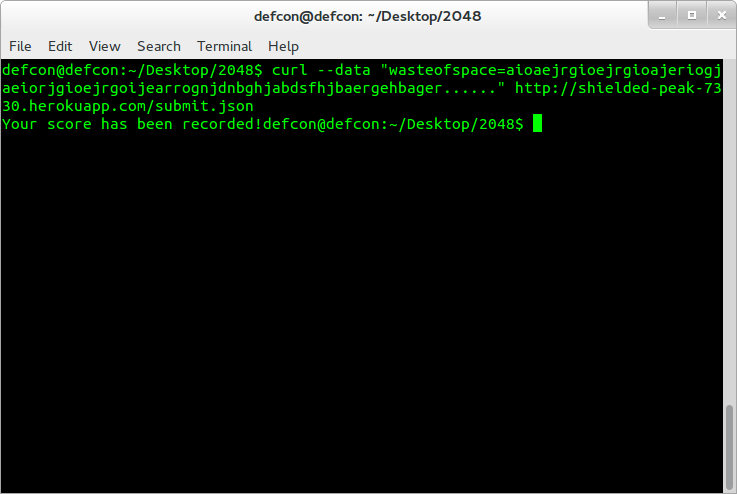

Comp 20 - Daniel Pasternak
This report is a security assessment of the Scorecenter web-app created by Emily Quigley. The scorecenter web-app is a tool that maintains a database of scores, usernames, grid positions and submission times, and generates a table displaying a high score board. Additionally, the site contains two other services, Submit.json and Scores.json. Submit.json accepts POST requests and is used to fill the database with highscores. It was the developers intent that the POST request would contain only usernames, valid scores, and valid grids. The Scores.json accpets GET requests and was intended to display a users high score, where a user could be specified using a URL parameter.
This report investigates methods to exploit the submit.json and scores.json services to compromise the 2048 Scorecenter web-app.
The assessement of the 2048 scorecenter app was split into two parts. First, attacks were attempted treating the code as a "black box", without any awareness of the serverside contents. Then, the serverside program was viewed, and further attacks were carried out. Several techniques were used. They include changing the content of GET and POST requests using tamper data, generating malicious requests using curl, and funneling in unintended paramaters through the URL.
In order to make the attacking process easier, a local copy of the mongo database and a local copy of the website was used. This allows for the use of debugging tools such as viewing the contents of the database and viewing the status of http requests to the site.
The POST API contained all of the identified security issues of the scorecenter page. The vast majority of these issues stem from unrestricted content in the POST API. Essentially the only requirement is that the uploaded input is JSON. There is no verification that the JSON does not contain scripts, html, or is itself valid JSON. This could allow a user to upload scripts that will be executed on a client machine, or potentially on the server. The GET API was found to be relatively secure, as it did not easily allow code to be executed on any other machine.
Affects the submit.json POST API
It is simple for a user to submit a post request with an invalid score or username, including leaving these fields null. Hence it is possible to use a POST request to sumbit a score of 99999999999 with no user name and no grid, as shown in the images below.
This would allow a user to post false high scores, impersonate other users, or otherwise pollute the 2048 gamecenter high score board.
curl request used to add invalid info to database
result of adding invalid score
Affects submit.json POST API
No validation is performed on the input parameters. Importantly, HTML is not escaped, allowing a malicious attacker to insert HTML or javascipts into the database, which will then be displayed when a user loads the 2048 Gamecenter. For example, a Youtube en Iframe containing the double rainbow video has been added to the page
This expolit is particularly high risk. Since html is not escaped, a script could be added that when run on a client machine, either mangles the website beyond recognition, or cause other damage to the site.
curl request to inject HTML or script
result of HTML injection
affects submit.json POST API
There is no checking of fields in the POST API. Any arbitrary field can be added to the database.
This may be dangerous if an attacker creates a data point with a new field that may contain arbitrary amounts of data. An attacker could potentially use this techinque to inflate the size of the database to extremely large levels.
An attacker can add additional fields that are harder to identify beacuse they dont affect the user input, but may expand the size of the database significantly
The POST API contains a majority of the security flaws of the website. No meaningful validation of user input is performed on the inputted code. This allows a user to upload HTML or javascripts. This is a security critical flaw that could allow an attacker to hijack the scorecenters frontpage by writing a script that changes the HTML of the page to whatever they wish. Furthermore, it could allow a user to inject a script, that if ran on the server machine when an administrator checks the code, alters critical files of the site. This can be fixed by escaping nonalphanumeric characters.
In contrast, the GET API is relatively secure. It does not provide a method to execute any code on the server or any client machines.